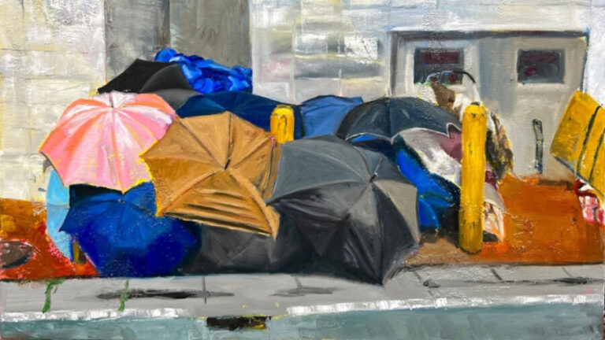

The Uncivil Canvas: Art in the Age of Discord – Closing Reception & Walkthrough
Closing Reception & Walkthrough: Saturday, February 14, 2–4 PM CST —
CHICAGO—Woman Made Gallery (WMG) is pleased to announce The Uncivil Canvas: Art in the Age of Discord, a juried group exhibition opening January 17, 2026, with an artist reception from 4 to 7 p.m. Juror Karen M. Gutfreund selected works in a variety of mediums by 34 artists from across the United States.
The Uncivil Canvas: Art in the Age of Discord features art that responds to urgent issues including racial injustice, immigration, systemic inequities, economic disparity, access to food, water, housing, healthcare, the climate crisis, ongoing wars, women’s rights, and gender diversity. The works operate as instruments of resistance and empathy, challenging divisive and authoritarian ideologies with art that speaks truth to power.
Exhibition Events
The exhibition opens with a reception at Woman Made Gallery, 1332 S. Halsted St. in Chicago, on Saturday, January 17, from 4 to 7 p.m. Current gallery hours are Wednesdays through Sundays from noon to 5 p.m.
The Closing Reception includes an Artist Walkthrough on Saturday, February 14 from 2 to 4 p.m., offering a final opportunity to meet the participating artists in person. Events at WMG are free and open to the public.
Exhibiting Artists: Elaine Alibrandi, Salma Arastu, Nicci Arnold, Bianca Bisej, Lorraine Bonner, Nancy Calef, Dagny Rayn Chika, Patricia Dahlman, Sally Edelstein, Pamela Flynn, Lisa Freeman, Libby Gamble, Kelly Hartigan Goldstein, Tonia Indigo Hughes, Cynthia Kerby, Beth Lakamp, Toni Martinez, Clarissa Martinez, Jessica McKenzie, Melisa of MWY Pottery, Judith Mogul, Lori Moretti, Priscilla Otani, Recka, Donna Ruff, Gigi Salij, Adrienne Sloane, Siana Smith, Lucy VanRegenmorter, Lisa Venditelli, Jeane Vogel, Emily Weddle, Michelle Wilkie, Teresa Greve Wolf
About the Juror: Karen M. Gutfreund is an independent curator, artist, and consultant focused on feminist and social justice art. She has held positions at MoMA, leading galleries, and the Pacific Art League, and served as National Exhibitions Director and board member for the Women’s Caucus for Art. She has organized 50+ national exhibitions, curated the book Not Normal: Art in the Age of Trump, exhibits widely, and lives in California’s Sierra Foothills.